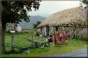

The Hebrides
Join Travel Scotland! for a two-week tour of the Hebrides. The trip takes you to four of the beautiful Hebridean islands, including Fingal's Cave, featured in Medelssohn's The Hebrides Overture.
The tour starts with a train tour of the Highlands from Glasgow to Fort William. After an overnight stay in Fort William, we leave by train and ferry to the Isle of Skye. While there, you'll have a chance to tour Dunvegan Castle and visit the Black Cullins in southern Skye. A boat trip to Mallaig follows and tour through Moidart where we'll visit the most western point in Great Britain.
No tour of the Hebrides can be complete with a visit to Iona and Fingal's Cave. Plenty of time will be available for touring the abbey at Iona and touring the ruins. Pay your respects at the grave of St. Columba who, as the legends tell it, was a disciple of St. Patrick and brought Christianity to the Highlands.
You'll spend the next three days in Oban and on the Isle of Jura. Be sure to take some time to sample its world-famous scotch! The trip concludes with two days in Glasgow.